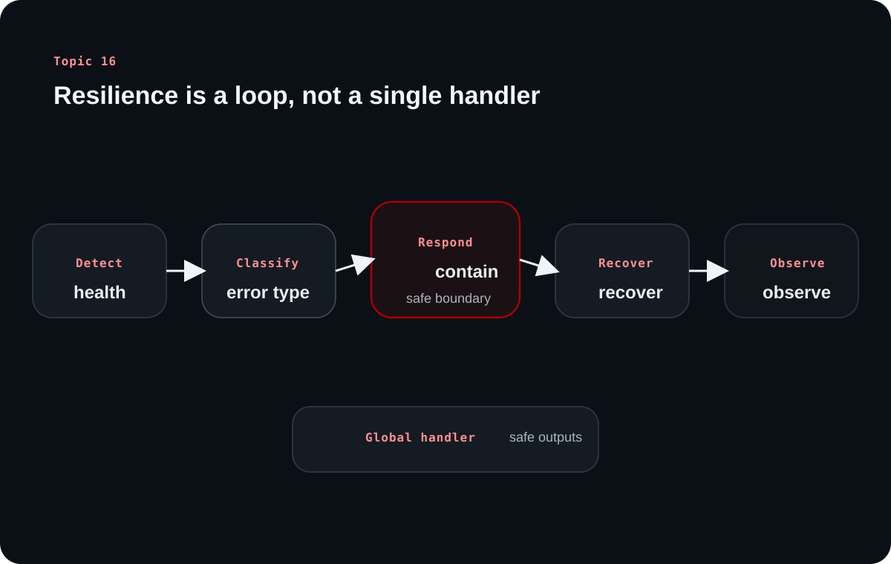

Error Handling and Building Fault Tolerant Systems
Topic 16 treats failures as a normal part of backend life rather than as exceptional surprises. The article turns error handling into a design discipline that starts before an error is ever thrown.
The source's strongest message is mindset: resilience comes from early detection, clear boundaries, safe recovery paths, and responses that help operators without leaking dangerous internal detail to users.
Chapter 1
Fault tolerance begins with accepting that backend systems will fail in different ways
The source starts with mindset before tools, which is the right order for resilience work.
The job is not to eliminate all failures, but to be ready for them
The source is explicit that errors are inevitable in backend systems. Databases fail, external services time out, user input is malformed, and business logic can still be wrong even when the application keeps running.
That means fault tolerance is less about pretending errors are rare and more about building systems that detect, contain, and recover without losing control of the user experience.
Different error families require different responses
The source names logic errors, database errors, external service errors, input validation errors, and configuration errors. Grouping failures this way helps teams respond intentionally instead of treating every error as a generic 500 problem.
A validation mistake at the request boundary is a very different operational problem from a deadlock, a third-party outage, or a broken deployment configuration.
Error family
Typical shape
Why it matters
Logic
Wrong behavior without necessarily crashing
Can silently damage business outcomes
Database
Constraint, connection, deadlock, or query failures
Threatens data flow and system stability
External service
Timeouts, auth issues, rate limits, outages
Introduces failure outside your direct control
Validation
Bad client input
Should be caught early and reported clearly
Configuration
Missing or incorrect environment setup
Can break startup or runtime unexpectedly
Chapter 2
The best time to handle many errors is before they become incidents
The source places proactive detection before recovery because prevention is cheaper than emergency response.
Health checks and monitoring expose trouble before users explain it to you
Health checks can confirm that the service, database, or other critical dependencies are reachable and responding. Monitoring then tracks error rates, performance shifts, and business signals so teams can detect unusual patterns early.
The source also highlights structured logging because good observability is not only about volume of logs, but about having logs that can actually be searched, correlated, and acted on.
Validation and configuration checks are proactive fault-tolerance tools
Input validation is one of the easiest and most valuable places to stop bad state from entering the system. Configuration validation is similar: if required environment variables or credentials are missing, the backend should fail clearly at startup instead of surprising operators later at runtime.
This is one of the strongest source lessons for beginners. Many unexpected incidents are really validation or configuration problems that were allowed to travel too far downstream.
Chapter 3
Retries, containment, and boundaries keep one failure from becoming many
After detection, the source focuses on what a system should do once an error has already occurred.
Recoverable failures deserve controlled retries, not panic loops
The source specifically recommends retry strategies with exponential backoff for recoverable external-service failures such as rate limits or transient outages. This creates breathing room for the dependency instead of hammering it harder while it is already failing.
Not every error should be retried. That judgment is part of fault tolerance too, because useless retries can magnify damage and cost.
Graceful degradation and service boundaries reduce blast radius
When a failure is not recoverable immediately, the goal shifts to containment. The source mentions graceful degradation, timeouts, message queues, and service boundaries as ways to keep one failing dependency from dragging the rest of the system down with it.
This is where architectural patterns matter. Isolation is not only a performance or scaling concern; it is also an error-management tool.
Learning diagram

A resilient backend handles failures as a loop: detect them early, classify them correctly, respond safely, recover where possible, and keep observing the system afterward.
Chapter 4
Centralized handlers give the system one reliable place to normalize failures
The source uses a layered request flow to show why global error handling is practical, not just elegant.
Global error handling middleware protects consistency across layers
Routing, handlers, services, and repositories can all raise different kinds of errors. A centralized handler gives the backend one final safety net that maps these failures into consistent HTTP responses instead of duplicating response logic everywhere.
That improves maintainability and reduces the chance that one route leaks raw internal error details while another route sanitizes them properly.
Transport responses should stay honest and useful
The source ties error handling back to familiar HTTP behavior: 400 for client-side issues such as validation failures, 404 for missing resources, 429 for rate limiting, and 500 for unexpected server failures. This keeps the transport layer meaningful rather than arbitrary.
A useful beginner habit is to think in layers: domain or infrastructure errors happen internally, but the API surface still needs one clean and predictable response language.
Chapter 5
A safe error response helps the user without helping an attacker
The source closes with the security side of error handling because clarity should never become data leakage.
User-facing messages should be meaningful but not revealing
Database schema details, stack traces, and internal constraint names should not be returned to clients. Authentication flows should also avoid revealing whether a specific user exists, which is why generic messages such as invalid username or password are safer than highly specific ones.
This is where mature error handling differs from merely catching exceptions. The system needs to communicate enough to guide the user while protecting internal details.
Good logs help operators without storing sensitive data carelessly
The source recommends correlation IDs and user IDs instead of sensitive personal data in logs. Passwords, API keys, credit-card details, and similar secrets should not leak into log pipelines that may be stored or transmitted broadly.
That discipline matters because observability systems are incredibly useful, but they also widen the surface where accidental data exposure can occur.
Overall takeaway
What to remember
Fault-tolerant backends detect problems early, classify them correctly, recover when recovery is sensible, contain failures when it is not, and communicate errors through secure, consistent interfaces. Error handling starts before the exception, not after it.